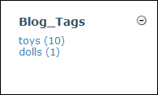
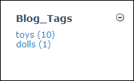
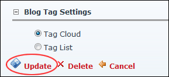

- Tag Cloud: Select to display tag names.

- Tag List: Select to display tags in a list. The number of entries associated with each tag is listed beside the tag name. This is the default setting.

How to set the way blog tags are displayed on the Blog_Tags module which forms part of the Blog module suite.


Configuring Blog Tag Settings